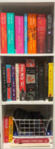
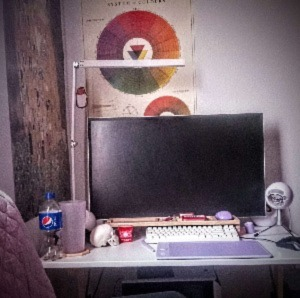

<entry 4: Visual Thinking Analysis >
<date="feb 9th, 2023">


The image on the left is my image, which is of my bookshelf of the current physical books I own. Something you wouldn’t know from looking at this image is that many of these books were gifts, except for the top row of books, which were all my personal choices and purchases. I really love reading, especially physical books, but I can’t store very many of them while here at university. I primarily read fiction, though I have some design oriented books including some historical web design index books on the bottom shelf. I feel like this picture really represents what I enjoy doing as a hobby.
The image on the right is Jenni’s image. Her image is similar to mine in the sense that it is her own personal space that she has filled with things that represent her. I can tell she likes to draw digitally from the electronic drawing tablet on the desk and I can also tell that maybe her favorite color is purple based on the variety of purple accessories on the desk. The image is really interesting to me because it gives people an insight into what she likes and also leaves some questions too, like what is the skull for? Is it decoration or does she maybe use it as a reference?
</entry>
<entry 3: visual thinking>
<date="feb 9th, 2023">
The article '10 Intriguing Photographs to Teach Close Reading and Visual Thinking Skills' talks about different ways to analyze meaning and design elements within a photograph to find more details or answers than just a single glance could. As someone who works as a photographer, I'm already extremely familar with the concept of close reading photographs. It prompts you to ask open-ended questions about the context of the photo, and figure out what it means. For the webside Prometheus Fuels, which tells an interactive story about how the company is creating fuel from air, invites users to move their mouse, rotating in 3D space as well as scroll to explore imagery and reveal more of the story.
10 Intriguing Photographs to Teach Close Reading and Visual Thinking Skills
Prometheus Fuels
</entry>
<entry 1: form design research>
<date="jan 30th, 2023">
The article talks about creating forms that users actually want to use, specifically uncomplicating and showing the process to them as they complete the form. You should break up the options and answers into more manageable chunks, and even show them where they are and how far away they are from completing the form itself. All the information should be visually accessible but uncomplicated. My first thought of well-done forms are those personality quizzes from places like quizilla or uquiz, where you selection options and then are presented with an answer based on those options.
form design best practices
what's your literary archetype?
</entry>